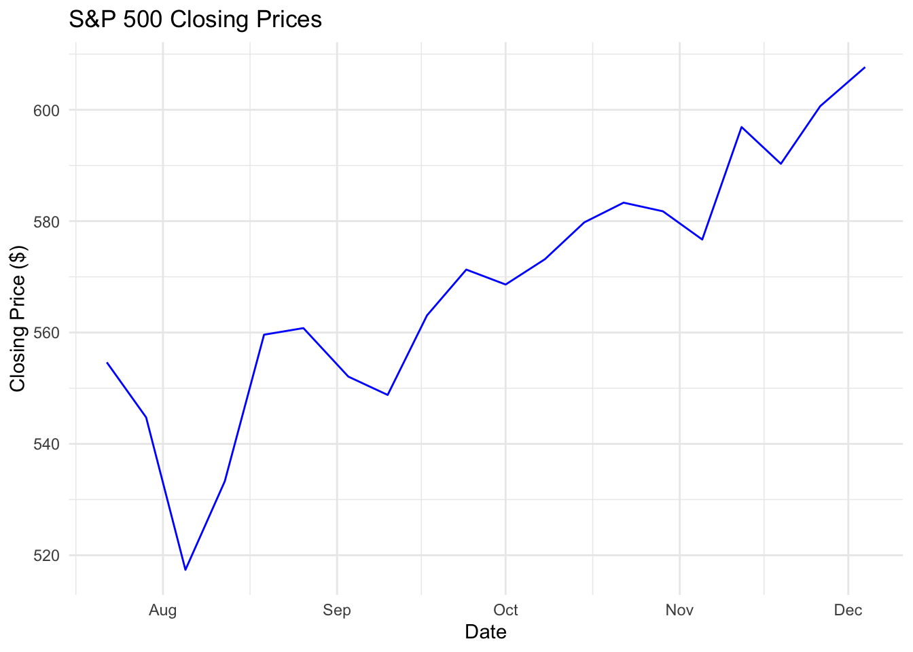
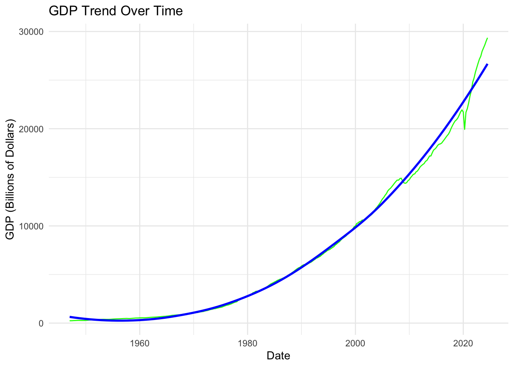

#Accessing the keys
alpha_key <- Sys.getenv("ALPHAVANTAGE_KEY")
fred_key <- Sys.getenv("FRED_KEY")Monte Carlo-Informed Selection of CUNY Retirement Plans
Introduction
The objective of this project is to analyze and compare two retirement plans offered by CUNY using Monte Carlo simulations. By leveraging historical financial data, bootstrap resampling, and Monte Carlo techniques, we aim to assess the likelihood that one plan outperforms the other under various market conditions. This analysis will consider factors like historical market returns, inflation rates, and individual demographics to provide a data-driven recommendation for optimal retirement planning.
The analysis is implemented in R using RStudio, taking advantage of packages such as tidyverse, boot, and quantmod for data manipulation, statistical computation, and financial data acquisition. This comprehensive approach ensures robust and replicable results.
Data Retrieval
Load API keys
AlphaVantage Example: Get stock data
alpha_url <- "https://www.alphavantage.co/query"
params <- list(
`function` = "TIME_SERIES_DAILY_ADJUSTED",
symbol = "AAPL",
apikey = alpha_key
)
response <- httr::GET(alpha_url, query = params)
alpha_data <- httr::content(response, as = "parsed", simplifyVector = TRUE)# Load necessary libraries
library(httr)Parse AlphaVantage Data
library(tibble)
library(tidyr)Warning: package 'tidyr' was built under R version 4.3.2library(dplyr)
Attaching package: 'dplyr'The following objects are masked from 'package:stats':
filter, lagThe following objects are masked from 'package:base':
intersect, setdiff, setequal, union# Parse AlphaVantage Data
stock_data <- alpha_data[["Time Series (Daily)"]] %>%
tibble::enframe(name = "Date", value = "Metrics") %>%
tidyr::unnest_wider(Metrics) %>%
mutate(Date = as.Date(Date))# Parse AlphaVantage Data
stock_data <- alpha_data[["Time Series (Daily)"]] %>%
tibble::enframe(name = "Date", value = "Metrics") %>%
tidyr::unnest_wider(Metrics) %>%
mutate(Date = as.Date(Date))# Example API request to fetch data
response <- GET("https://www.alphavantage.co/query", query = list(
'function' = "TIME_SERIES_DAILY",
symbol = "SP500",
apikey = "your_api_key"
))
# Parse the content of the response
sp500_data <- content(response, "parsed")params_sp500 <- list(
`function` = "TIME_SERIES_DAILY", # Use the free endpoint
symbol = "SPY", # Ticker symbol for SPDR S&P 500 ETF
apikey = alpha_key
)
response_sp500 <- GET(alpha_url, query = params_sp500)
sp500_data <- content(response_sp500, as = "parsed", simplifyVector = TRUE)
# Inspect response structure
str(sp500_data)List of 2
$ Meta Data :List of 5
..$ 1. Information : chr "Daily Prices (open, high, low, close) and Volumes"
..$ 2. Symbol : chr "SPY"
..$ 3. Last Refreshed: chr "2024-12-04"
..$ 4. Output Size : chr "Compact"
..$ 5. Time Zone : chr "US/Eastern"
$ Time Series (Daily):List of 100
..$ 2024-12-04:List of 5
.. ..$ 1. open : chr "605.6300"
.. ..$ 2. high : chr "607.9100"
.. ..$ 3. low : chr "604.9500"
.. ..$ 4. close : chr "607.6600"
.. ..$ 5. volume: chr "42787561"
..$ 2024-12-03:List of 5
.. ..$ 1. open : chr "603.3900"
.. ..$ 2. high : chr "604.1600"
.. ..$ 3. low : chr "602.3410"
.. ..$ 4. close : chr "603.9100"
.. ..$ 5. volume: chr "26906629"
..$ 2024-12-02:List of 5
.. ..$ 1. open : chr "602.9700"
.. ..$ 2. high : chr "604.3200"
.. ..$ 3. low : chr "602.4700"
.. ..$ 4. close : chr "603.6300"
.. ..$ 5. volume: chr "31745989"
..$ 2024-11-29:List of 5
.. ..$ 1. open : chr "599.6600"
.. ..$ 2. high : chr "603.3500"
.. ..$ 3. low : chr "599.3800"
.. ..$ 4. close : chr "602.5500"
.. ..$ 5. volume: chr "30095740"
..$ 2024-11-27:List of 5
.. ..$ 1. open : chr "600.4600"
.. ..$ 2. high : chr "600.8500"
.. ..$ 3. low : chr "597.2800"
.. ..$ 4. close : chr "598.8300"
.. ..$ 5. volume: chr "34000163"
..$ 2024-11-26:List of 5
.. ..$ 1. open : chr "598.8000"
.. ..$ 2. high : chr "601.3300"
.. ..$ 3. low : chr "598.0700"
.. ..$ 4. close : chr "600.6500"
.. ..$ 5. volume: chr "45621288"
..$ 2024-11-25:List of 5
.. ..$ 1. open : chr "599.5200"
.. ..$ 2. high : chr "600.8600"
.. ..$ 3. low : chr "595.2000"
.. ..$ 4. close : chr "597.5300"
.. ..$ 5. volume: chr "42441393"
..$ 2024-11-22:List of 5
.. ..$ 1. open : chr "593.6600"
.. ..$ 2. high : chr "596.1500"
.. ..$ 3. low : chr "593.1525"
.. ..$ 4. close : chr "595.5100"
.. ..$ 5. volume: chr "38226390"
..$ 2024-11-21:List of 5
.. ..$ 1. open : chr "593.4000"
.. ..$ 2. high : chr "595.1200"
.. ..$ 3. low : chr "587.4500"
.. ..$ 4. close : chr "593.6700"
.. ..$ 5. volume: chr "46750285"
..$ 2024-11-20:List of 5
.. ..$ 1. open : chr "590.3800"
.. ..$ 2. high : chr "590.7900"
.. ..$ 3. low : chr "584.6300"
.. ..$ 4. close : chr "590.5000"
.. ..$ 5. volume: chr "50032576"
..$ 2024-11-19:List of 5
.. ..$ 1. open : chr "584.7100"
.. ..$ 2. high : chr "591.0450"
.. ..$ 3. low : chr "584.0300"
.. ..$ 4. close : chr "590.3000"
.. ..$ 5. volume: chr "49412046"
..$ 2024-11-18:List of 5
.. ..$ 1. open : chr "586.2200"
.. ..$ 2. high : chr "589.4900"
.. ..$ 3. low : chr "585.3400"
.. ..$ 4. close : chr "588.1500"
.. ..$ 5. volume: chr "37084081"
..$ 2024-11-15:List of 5
.. ..$ 1. open : chr "589.7200"
.. ..$ 2. high : chr "590.2000"
.. ..$ 3. low : chr "583.8600"
.. ..$ 4. close : chr "585.7500"
.. ..$ 5. volume: chr "75988766"
..$ 2024-11-14:List of 5
.. ..$ 1. open : chr "597.3200"
.. ..$ 2. high : chr "597.8100"
.. ..$ 3. low : chr "592.6500"
.. ..$ 4. close : chr "593.3500"
.. ..$ 5. volume: chr "38904109"
..$ 2024-11-13:List of 5
.. ..$ 1. open : chr "597.3700"
.. ..$ 2. high : chr "599.2300"
.. ..$ 3. low : chr "594.9600"
.. ..$ 4. close : chr "597.1900"
.. ..$ 5. volume: chr "47388640"
..$ 2024-11-12:List of 5
.. ..$ 1. open : chr "598.6800"
.. ..$ 2. high : chr "599.2900"
.. ..$ 3. low : chr "594.3700"
.. ..$ 4. close : chr "596.9000"
.. ..$ 5. volume: chr "43006128"
..$ 2024-11-11:List of 5
.. ..$ 1. open : chr "599.8100"
.. ..$ 2. high : chr "600.1700"
.. ..$ 3. low : chr "597.0000"
.. ..$ 4. close : chr "598.7600"
.. ..$ 5. volume: chr "37586773"
..$ 2024-11-08:List of 5
.. ..$ 1. open : chr "596.1700"
.. ..$ 2. high : chr "599.6400"
.. ..$ 3. low : chr "596.1650"
.. ..$ 4. close : chr "598.1900"
.. ..$ 5. volume: chr "46444893"
..$ 2024-11-07:List of 5
.. ..$ 1. open : chr "593.0800"
.. ..$ 2. high : chr "596.6500"
.. ..$ 3. low : chr "592.9999"
.. ..$ 4. close : chr "595.6100"
.. ..$ 5. volume: chr "47233212"
..$ 2024-11-06:List of 5
.. ..$ 1. open : chr "589.2000"
.. ..$ 2. high : chr "591.9300"
.. ..$ 3. low : chr "585.3900"
.. ..$ 4. close : chr "591.0400"
.. ..$ 5. volume: chr "68181968"
..$ 2024-11-05:List of 5
.. ..$ 1. open : chr "570.7400"
.. ..$ 2. high : chr "576.7400"
.. ..$ 3. low : chr "570.5200"
.. ..$ 4. close : chr "576.7000"
.. ..$ 5. volume: chr "39478322"
..$ 2024-11-04:List of 5
.. ..$ 1. open : chr "571.1800"
.. ..$ 2. high : chr "572.5000"
.. ..$ 3. low : chr "567.8900"
.. ..$ 4. close : chr "569.8100"
.. ..$ 5. volume: chr "38216975"
..$ 2024-11-01:List of 5
.. ..$ 1. open : chr "571.3200"
.. ..$ 2. high : chr "575.5500"
.. ..$ 3. low : chr "570.6200"
.. ..$ 4. close : chr "571.0400"
.. ..$ 5. volume: chr "45667533"
..$ 2024-10-31:List of 5
.. ..$ 1. open : chr "575.5600"
.. ..$ 2. high : chr "575.6300"
.. ..$ 3. low : chr "568.4400"
.. ..$ 4. close : chr "568.6400"
.. ..$ 5. volume: chr "60182451"
..$ 2024-10-30:List of 5
.. ..$ 1. open : chr "581.2900"
.. ..$ 2. high : chr "583.3200"
.. ..$ 3. low : chr "579.2900"
.. ..$ 4. close : chr "580.0100"
.. ..$ 5. volume: chr "41435839"
..$ 2024-10-29:List of 5
.. ..$ 1. open : chr "579.8500"
.. ..$ 2. high : chr "582.9070"
.. ..$ 3. low : chr "578.4300"
.. ..$ 4. close : chr "581.7700"
.. ..$ 5. volume: chr "42899661"
..$ 2024-10-28:List of 5
.. ..$ 1. open : chr "582.5800"
.. ..$ 2. high : chr "582.7100"
.. ..$ 3. low : chr "580.5200"
.. ..$ 4. close : chr "580.8300"
.. ..$ 5. volume: chr "30174704"
..$ 2024-10-25:List of 5
.. ..$ 1. open : chr "581.5100"
.. ..$ 2. high : chr "584.4600"
.. ..$ 3. low : chr "578.0800"
.. ..$ 4. close : chr "579.0400"
.. ..$ 5. volume: chr "47268176"
..$ 2024-10-24:List of 5
.. ..$ 1. open : chr "579.9800"
.. ..$ 2. high : chr "580.0600"
.. ..$ 3. low : chr "576.5700"
.. ..$ 4. close : chr "579.2400"
.. ..$ 5. volume: chr "34979860"
..$ 2024-10-23:List of 5
.. ..$ 1. open : chr "581.2600"
.. ..$ 2. high : chr "581.7086"
.. ..$ 3. low : chr "574.4150"
.. ..$ 4. close : chr "577.9900"
.. ..$ 5. volume: chr "49314574"
..$ 2024-10-22:List of 5
.. ..$ 1. open : chr "581.0500"
.. ..$ 2. high : chr "584.5000"
.. ..$ 3. low : chr "580.3800"
.. ..$ 4. close : chr "583.3200"
.. ..$ 5. volume: chr "34183835"
..$ 2024-10-21:List of 5
.. ..$ 1. open : chr "583.8500"
.. ..$ 2. high : chr "584.8500"
.. ..$ 3. low : chr "580.6001"
.. ..$ 4. close : chr "583.6300"
.. ..$ 5. volume: chr "36439010"
..$ 2024-10-18:List of 5
.. ..$ 1. open : chr "584.0700"
.. ..$ 2. high : chr "585.3900"
.. ..$ 3. low : chr "582.5800"
.. ..$ 4. close : chr "584.5900"
.. ..$ 5. volume: chr "37416801"
..$ 2024-10-17:List of 5
.. ..$ 1. open : chr "585.9100"
.. ..$ 2. high : chr "586.1200"
.. ..$ 3. low : chr "582.1600"
.. ..$ 4. close : chr "582.3500"
.. ..$ 5. volume: chr "34393714"
..$ 2024-10-16:List of 5
.. ..$ 1. open : chr "579.7800"
.. ..$ 2. high : chr "582.8300"
.. ..$ 3. low : chr "578.9600"
.. ..$ 4. close : chr "582.3000"
.. ..$ 5. volume: chr "30725436"
..$ 2024-10-15:List of 5
.. ..$ 1. open : chr "584.5900"
.. ..$ 2. high : chr "584.9000"
.. ..$ 3. low : chr "578.5450"
.. ..$ 4. close : chr "579.7800"
.. ..$ 5. volume: chr "54203636"
..$ 2024-10-14:List of 5
.. ..$ 1. open : chr "581.2200"
.. ..$ 2. high : chr "585.2700"
.. ..$ 3. low : chr "580.7300"
.. ..$ 4. close : chr "584.3200"
.. ..$ 5. volume: chr "36217215"
..$ 2024-10-11:List of 5
.. ..$ 1. open : chr "576.0500"
.. ..$ 2. high : chr "580.3300"
.. ..$ 3. low : chr "575.9100"
.. ..$ 4. close : chr "579.5800"
.. ..$ 5. volume: chr "42267994"
..$ 2024-10-10:List of 5
.. ..$ 1. open : chr "575.7700"
.. ..$ 2. high : chr "577.5800"
.. ..$ 3. low : chr "574.4900"
.. ..$ 4. close : chr "576.1300"
.. ..$ 5. volume: chr "44138060"
..$ 2024-10-09:List of 5
.. ..$ 1. open : chr "573.1600"
.. ..$ 2. high : chr "577.7100"
.. ..$ 3. low : chr "572.5500"
.. ..$ 4. close : chr "577.1400"
.. ..$ 5. volume: chr "37912244"
..$ 2024-10-08:List of 5
.. ..$ 1. open : chr "570.4200"
.. ..$ 2. high : chr "573.7800"
.. ..$ 3. low : chr "569.5299"
.. ..$ 4. close : chr "573.1700"
.. ..$ 5. volume: chr "37398693"
..$ 2024-10-07:List of 5
.. ..$ 1. open : chr "571.3000"
.. ..$ 2. high : chr "571.9599"
.. ..$ 3. low : chr "566.6300"
.. ..$ 4. close : chr "567.8000"
.. ..$ 5. volume: chr "49964690"
..$ 2024-10-04:List of 5
.. ..$ 1. open : chr "572.3500"
.. ..$ 2. high : chr "573.3600"
.. ..$ 3. low : chr "568.1000"
.. ..$ 4. close : chr "572.9800"
.. ..$ 5. volume: chr "43005186"
..$ 2024-10-03:List of 5
.. ..$ 1. open : chr "567.3600"
.. ..$ 2. high : chr "569.8025"
.. ..$ 3. low : chr "565.4900"
.. ..$ 4. close : chr "567.8200"
.. ..$ 5. volume: chr "40846466"
..$ 2024-10-02:List of 5
.. ..$ 1. open : chr "567.7100"
.. ..$ 2. high : chr "569.9000"
.. ..$ 3. low : chr "565.2700"
.. ..$ 4. close : chr "568.8600"
.. ..$ 5. volume: chr "38097798"
..$ 2024-10-01:List of 5
.. ..$ 1. open : chr "573.4000"
.. ..$ 2. high : chr "574.0622"
.. ..$ 3. low : chr "566.0000"
.. ..$ 4. close : chr "568.6200"
.. ..$ 5. volume: chr "72668778"
..$ 2024-09-30:List of 5
.. ..$ 1. open : chr "570.4200"
.. ..$ 2. high : chr "574.3800"
.. ..$ 3. low : chr "568.0800"
.. ..$ 4. close : chr "573.7600"
.. ..$ 5. volume: chr "63655448"
..$ 2024-09-27:List of 5
.. ..$ 1. open : chr "573.3900"
.. ..$ 2. high : chr "574.2200"
.. ..$ 3. low : chr "570.4200"
.. ..$ 4. close : chr "571.4700"
.. ..$ 5. volume: chr "42100928"
..$ 2024-09-26:List of 5
.. ..$ 1. open : chr "574.3800"
.. ..$ 2. high : chr "574.7100"
.. ..$ 3. low : chr "569.9000"
.. ..$ 4. close : chr "572.3000"
.. ..$ 5. volume: chr "48336004"
..$ 2024-09-25:List of 5
.. ..$ 1. open : chr "571.1400"
.. ..$ 2. high : chr "571.8900"
.. ..$ 3. low : chr "568.9100"
.. ..$ 4. close : chr "570.0400"
.. ..$ 5. volume: chr "38428587"
..$ 2024-09-24:List of 5
.. ..$ 1. open : chr "570.4800"
.. ..$ 2. high : chr "571.3600"
.. ..$ 3. low : chr "567.6000"
.. ..$ 4. close : chr "571.3000"
.. ..$ 5. volume: chr "46805672"
..$ 2024-09-23:List of 5
.. ..$ 1. open : chr "569.3400"
.. ..$ 2. high : chr "570.3325"
.. ..$ 3. low : chr "568.1000"
.. ..$ 4. close : chr "569.6700"
.. ..$ 5. volume: chr "44116922"
..$ 2024-09-20:List of 5
.. ..$ 1. open : chr "567.8400"
.. ..$ 2. high : chr "569.3100"
.. ..$ 3. low : chr "565.1700"
.. ..$ 4. close : chr "568.2500"
.. ..$ 5. volume: chr "77503110"
..$ 2024-09-19:List of 5
.. ..$ 1. open : chr "571.0100"
.. ..$ 2. high : chr "572.8800"
.. ..$ 3. low : chr "568.0800"
.. ..$ 4. close : chr "570.9800"
.. ..$ 5. volume: chr "75315470"
..$ 2024-09-18:List of 5
.. ..$ 1. open : chr "563.7400"
.. ..$ 2. high : chr "568.6900"
.. ..$ 3. low : chr "560.8300"
.. ..$ 4. close : chr "561.4000"
.. ..$ 5. volume: chr "59044937"
..$ 2024-09-17:List of 5
.. ..$ 1. open : chr "565.1000"
.. ..$ 2. high : chr "566.5800"
.. ..$ 3. low : chr "560.7950"
.. ..$ 4. close : chr "563.0700"
.. ..$ 5. volume: chr "49320970"
..$ 2024-09-16:List of 5
.. ..$ 1. open : chr "561.7400"
.. ..$ 2. high : chr "563.1100"
.. ..$ 3. low : chr "559.9000"
.. ..$ 4. close : chr "562.8400"
.. ..$ 5. volume: chr "36656122"
..$ 2024-09-13:List of 5
.. ..$ 1. open : chr "559.7100"
.. ..$ 2. high : chr "563.0300"
.. ..$ 3. low : chr "559.4500"
.. ..$ 4. close : chr "562.0100"
.. ..$ 5. volume: chr "39310501"
..$ 2024-09-12:List of 5
.. ..$ 1. open : chr "555.0100"
.. ..$ 2. high : chr "559.4000"
.. ..$ 3. low : chr "552.7400"
.. ..$ 4. close : chr "559.0900"
.. ..$ 5. volume: chr "51892735"
..$ 2024-09-11:List of 5
.. ..$ 1. open : chr "548.7000"
.. ..$ 2. high : chr "555.3600"
.. ..$ 3. low : chr "539.9600"
.. ..$ 4. close : chr "554.4200"
.. ..$ 5. volume: chr "75248608"
..$ 2024-09-10:List of 5
.. ..$ 1. open : chr "548.3600"
.. ..$ 2. high : chr "549.1500"
.. ..$ 3. low : chr "543.3800"
.. ..$ 4. close : chr "548.7900"
.. ..$ 5. volume: chr "36394579"
..$ 2024-09-09:List of 5
.. ..$ 1. open : chr "544.6500"
.. ..$ 2. high : chr "547.7100"
.. ..$ 3. low : chr "542.6800"
.. ..$ 4. close : chr "546.4100"
.. ..$ 5. volume: chr "40445822"
..$ 2024-09-06:List of 5
.. ..$ 1. open : chr "549.9400"
.. ..$ 2. high : chr "551.6000"
.. ..$ 3. low : chr "539.4400"
.. ..$ 4. close : chr "540.3600"
.. ..$ 5. volume: chr "68493805"
..$ 2024-09-05:List of 5
.. ..$ 1. open : chr "550.8900"
.. ..$ 2. high : chr "553.7995"
.. ..$ 3. low : chr "547.1000"
.. ..$ 4. close : chr "549.6100"
.. ..$ 5. volume: chr "44264258"
..$ 2024-09-04:List of 5
.. ..$ 1. open : chr "550.2000"
.. ..$ 2. high : chr "554.4300"
.. ..$ 3. low : chr "549.4600"
.. ..$ 4. close : chr "550.9500"
.. ..$ 5. volume: chr "46232483"
..$ 2024-09-03:List of 5
.. ..$ 1. open : chr "560.4700"
.. ..$ 2. high : chr "560.8100"
.. ..$ 3. low : chr "549.5100"
.. ..$ 4. close : chr "552.0800"
.. ..$ 5. volume: chr "60600113"
..$ 2024-08-30:List of 5
.. ..$ 1. open : chr "560.7700"
.. ..$ 2. high : chr "564.2000"
.. ..$ 3. low : chr "557.1400"
.. ..$ 4. close : chr "563.6800"
.. ..$ 5. volume: chr "62700110"
..$ 2024-08-29:List of 5
.. ..$ 1. open : chr "560.3100"
.. ..$ 2. high : chr "563.6800"
.. ..$ 3. low : chr "557.1800"
.. ..$ 4. close : chr "558.3500"
.. ..$ 5. volume: chr "38715176"
..$ 2024-08-28:List of 5
.. ..$ 1. open : chr "561.2100"
.. ..$ 2. high : chr "561.6500"
.. ..$ 3. low : chr "555.0400"
.. ..$ 4. close : chr "558.3000"
.. ..$ 5. volume: chr "41066024"
..$ 2024-08-27:List of 5
.. ..$ 1. open : chr "559.4900"
.. ..$ 2. high : chr "562.0600"
.. ..$ 3. low : chr "558.3200"
.. ..$ 4. close : chr "561.5600"
.. ..$ 5. volume: chr "32693898"
..$ 2024-08-26:List of 5
.. ..$ 1. open : chr "563.1800"
.. ..$ 2. high : chr "563.9100"
.. ..$ 3. low : chr "559.0500"
.. ..$ 4. close : chr "560.7900"
.. ..$ 5. volume: chr "35788609"
..$ 2024-08-23:List of 5
.. ..$ 1. open : chr "559.5300"
.. ..$ 2. high : chr "563.0900"
.. ..$ 3. low : chr "557.2900"
.. ..$ 4. close : chr "562.1300"
.. ..$ 5. volume: chr "50639393"
..$ 2024-08-22:List of 5
.. ..$ 1. open : chr "562.5600"
.. ..$ 2. high : chr "563.1800"
.. ..$ 3. low : chr "554.9800"
.. ..$ 4. close : chr "556.2200"
.. ..$ 5. volume: chr "56121456"
..$ 2024-08-21:List of 5
.. ..$ 1. open : chr "559.7700"
.. ..$ 2. high : chr "562.1100"
.. ..$ 3. low : chr "554.7300"
.. ..$ 4. close : chr "560.6200"
.. ..$ 5. volume: chr "41514600"
..$ 2024-08-20:List of 5
.. ..$ 1. open : chr "559.1500"
.. ..$ 2. high : chr "560.8400"
.. ..$ 3. low : chr "557.3250"
.. ..$ 4. close : chr "558.7000"
.. ..$ 5. volume: chr "33732264"
..$ 2024-08-19:List of 5
.. ..$ 1. open : chr "554.7300"
.. ..$ 2. high : chr "559.6100"
.. ..$ 3. low : chr "553.8600"
.. ..$ 4. close : chr "559.6100"
.. ..$ 5. volume: chr "39121793"
..$ 2024-08-16:List of 5
.. ..$ 1. open : chr "551.4200"
.. ..$ 2. high : chr "555.0200"
.. ..$ 3. low : chr "551.2600"
.. ..$ 4. close : chr "554.3100"
.. ..$ 5. volume: chr "44430728"
..$ 2024-08-15:List of 5
.. ..$ 1. open : chr "549.5000"
.. ..$ 2. high : chr "553.3600"
.. ..$ 3. low : chr "548.8800"
.. ..$ 4. close : chr "553.0700"
.. ..$ 5. volume: chr "60846812"
..$ 2024-08-14:List of 5
.. ..$ 1. open : chr "542.8500"
.. ..$ 2. high : chr "544.9600"
.. ..$ 3. low : chr "540.1200"
.. ..$ 4. close : chr "543.7500"
.. ..$ 5. volume: chr "42446929"
..$ 2024-08-13:List of 5
.. ..$ 1. open : chr "536.5300"
.. ..$ 2. high : chr "542.2800"
.. ..$ 3. low : chr "536.2800"
.. ..$ 4. close : chr "542.0400"
.. ..$ 5. volume: chr "52333073"
..$ 2024-08-12:List of 5
.. ..$ 1. open : chr "534.2100"
.. ..$ 2. high : chr "535.7300"
.. ..$ 3. low : chr "530.9500"
.. ..$ 4. close : chr "533.2700"
.. ..$ 5. volume: chr "42542069"
..$ 2024-08-09:List of 5
.. ..$ 1. open : chr "529.8100"
.. ..$ 2. high : chr "534.5100"
.. ..$ 3. low : chr "528.5600"
.. ..$ 4. close : chr "532.9900"
.. ..$ 5. volume: chr "45619558"
..$ 2024-08-08:List of 5
.. ..$ 1. open : chr "523.9100"
.. ..$ 2. high : chr "531.2900"
.. ..$ 3. low : chr "521.8400"
.. ..$ 4. close : chr "530.6500"
.. ..$ 5. volume: chr "63276589"
..$ 2024-08-07:List of 5
.. ..$ 1. open : chr "528.4700"
.. ..$ 2. high : chr "531.5900"
.. ..$ 3. low : chr "518.0519"
.. ..$ 4. close : chr "518.6600"
.. ..$ 5. volume: chr "70698340"
..$ 2024-08-06:List of 5
.. ..$ 1. open : chr "519.2200"
.. ..$ 2. high : chr "529.7500"
.. ..$ 3. low : chr "517.8700"
.. ..$ 4. close : chr "522.1500"
.. ..$ 5. volume: chr "84826312"
..$ 2024-08-05:List of 5
.. ..$ 1. open : chr "511.6400"
.. ..$ 2. high : chr "523.5800"
.. ..$ 3. low : chr "510.2700"
.. ..$ 4. close : chr "517.3800"
.. ..$ 5. volume: chr "146267391"
..$ 2024-08-02:List of 5
.. ..$ 1. open : chr "535.7500"
.. ..$ 2. high : chr "536.9900"
.. ..$ 3. low : chr "528.6000"
.. ..$ 4. close : chr "532.9000"
.. ..$ 5. volume: chr "82789070"
..$ 2024-08-01:List of 5
.. ..$ 1. open : chr "552.5700"
.. ..$ 2. high : chr "554.8688"
.. ..$ 3. low : chr "539.4300"
.. ..$ 4. close : chr "543.0100"
.. ..$ 5. volume: chr "76428732"
..$ 2024-07-31:List of 5
.. ..$ 1. open : chr "548.9800"
.. ..$ 2. high : chr "553.5000"
.. ..$ 3. low : chr "547.5799"
.. ..$ 4. close : chr "550.8100"
.. ..$ 5. volume: chr "65663388"
..$ 2024-07-30:List of 5
.. ..$ 1. open : chr "546.2600"
.. ..$ 2. high : chr "547.3400"
.. ..$ 3. low : chr "538.5150"
.. ..$ 4. close : chr "542.0000"
.. ..$ 5. volume: chr "46853632"
..$ 2024-07-29:List of 5
.. ..$ 1. open : chr "546.0200"
.. ..$ 2. high : chr "547.0500"
.. ..$ 3. low : chr "542.7200"
.. ..$ 4. close : chr "544.7600"
.. ..$ 5. volume: chr "39515824"
..$ 2024-07-26:List of 5
.. ..$ 1. open : chr "542.2800"
.. ..$ 2. high : chr "547.1900"
.. ..$ 3. low : chr "541.4900"
.. ..$ 4. close : chr "544.4400"
.. ..$ 5. volume: chr "53763788"
..$ 2024-07-25:List of 5
.. ..$ 1. open : chr "541.3500"
.. ..$ 2. high : chr "547.4550"
.. ..$ 3. low : chr "537.4500"
.. ..$ 4. close : chr "538.4100"
.. ..$ 5. volume: chr "61158288"
..$ 2024-07-24:List of 5
.. ..$ 1. open : chr "548.8600"
.. ..$ 2. high : chr "549.1700"
.. ..$ 3. low : chr "540.2900"
.. ..$ 4. close : chr "541.2300"
.. ..$ 5. volume: chr "74515266"
..$ 2024-07-23:List of 5
.. ..$ 1. open : chr "554.5400"
.. ..$ 2. high : chr "556.7350"
.. ..$ 3. low : chr "553.2750"
.. ..$ 4. close : chr "553.7800"
.. ..$ 5. volume: chr "34439561"
..$ 2024-07-22:List of 5
.. ..$ 1. open : chr "553.0000"
.. ..$ 2. high : chr "555.2700"
.. ..$ 3. low : chr "551.0200"
.. ..$ 4. close : chr "554.6500"
.. ..$ 5. volume: chr "43346720"
..$ 2024-07-19:List of 5
.. ..$ 1. open : chr "552.4200"
.. ..$ 2. high : chr "554.0800"
.. ..$ 3. low : chr "547.9100"
.. ..$ 4. close : chr "548.9900"
.. ..$ 5. volume: chr "65509081"
..$ 2024-07-18:List of 5
.. ..$ 1. open : chr "558.5100"
.. ..$ 2. high : chr "559.5200"
.. ..$ 3. low : chr "550.4300"
.. ..$ 4. close : chr "552.6600"
.. ..$ 5. volume: chr "56270392"
..$ 2024-07-17:List of 5
.. ..$ 1. open : chr "558.8000"
.. ..$ 2. high : chr "560.5100"
.. ..$ 3. low : chr "556.6100"
.. ..$ 4. close : chr "556.9400"
.. ..$ 5. volume: chr "57118956"
.. [list output truncated]library(httr)
library(tidyverse)Warning: package 'ggplot2' was built under R version 4.3.2── Attaching core tidyverse packages ──────────────────────── tidyverse 2.0.0 ──
✔ forcats 1.0.0 ✔ purrr 1.0.2
✔ ggplot2 3.5.1 ✔ readr 2.1.5
✔ lubridate 1.9.3 ✔ stringr 1.5.1
── Conflicts ────────────────────────────────────────── tidyverse_conflicts() ──
✖ dplyr::filter() masks stats::filter()
✖ dplyr::lag() masks stats::lag()
ℹ Use the conflicted package (<http://conflicted.r-lib.org/>) to force all conflicts to become errors# Extract and parse the "Time Series (Daily)" data
sp500_data_clean <- sp500_data[["Time Series (Daily)"]] %>%
tibble::enframe(name = "Date", value = "Metrics") %>% # Convert list to tibble
unnest_wider(Metrics) %>% # Flatten the nested list in "Metrics"
mutate(
Date = as.Date(Date), # Convert date to Date format
`1. open` = as.numeric(`1. open`),
`2. high` = as.numeric(`2. high`),
`3. low` = as.numeric(`3. low`),
`4. close` = as.numeric(`4. close`),
`5. volume` = as.numeric(`5. volume`)
)
# Inspect the cleaned data
head(sp500_data_clean)# A tibble: 6 × 6
Date `1. open` `2. high` `3. low` `4. close` `5. volume`
<date> <dbl> <dbl> <dbl> <dbl> <dbl>
1 2024-12-04 606. 608. 605. 608. 42787561
2 2024-12-03 603. 604. 602. 604. 26906629
3 2024-12-02 603. 604. 602. 604. 31745989
4 2024-11-29 600. 603. 599. 603. 30095740
5 2024-11-27 600. 601. 597. 599. 34000163
6 2024-11-26 599. 601. 598. 601. 45621288FRED Example: Get economic indicator data
fred_url <- paste0("https://api.stlouisfed.org/fred/series/observations")
fred_params <- list(
series_id = "GDP",
api_key = fred_key,
file_type = "json"
)
fred_response <- GET(fred_url, query = fred_params)
fred_data <- content(fred_response, as = "parsed", simplifyVector = TRUE)head(fred_data[["observations"]]) realtime_start realtime_end date value
1 2024-11-27 2024-11-27 1946-01-01 .
2 2024-11-27 2024-11-27 1946-04-01 .
3 2024-11-27 2024-11-27 1946-07-01 .
4 2024-11-27 2024-11-27 1946-10-01 .
5 2024-11-27 2024-11-27 1947-01-01 243.164
6 2024-11-27 2024-11-27 1947-04-01 245.968# Parse FRED Data
gdp_data <- fred_data[["observations"]] %>%
tibble::as_tibble() %>%
mutate(
date = as.Date(date), # Convert 'date' column to Date format
value = value # Convert 'value' column to numeric (invalid values become NA)
)Visualizations
ggplot(sp500_data_clean, aes(x = Date, y = `4. close`)) +
geom_line(color = "blue") +
labs(
title = "S&P 500 Closing Prices",
x = "Date",
y = "Closing Price ($)"
) +
theme_minimal()
sp500_data_clean <- sp500_data_clean %>%
arrange(Date) %>%
mutate(
ma_30 = zoo::rollmean(`4. close`, k = 30, fill = NA), # 30-day moving average
ma_90 = zoo::rollmean(`4. close`, k = 90, fill = NA) # 90-day moving average
)
# Plot Closing Prices with Moving Averages
ggplot(sp500_data_clean, aes(x = Date)) +
geom_line(aes(y = `4. close`, color = "Closing Price")) +
geom_line(aes(y = ma_30, color = "30-Day Moving Avg")) +
geom_line(aes(y = ma_90, color = "90-Day Moving Avg")) +
labs(
title = "S&P 500 Closing Prices with Moving Averages",
x = "Date",
y = "Price ($)",
color = "Legend"
) +
theme_minimal()Warning: Removed 29 rows containing missing values or values outside the scale range
(`geom_line()`).Warning: Removed 89 rows containing missing values or values outside the scale range
(`geom_line()`).
str(fred_data)List of 13
$ realtime_start : chr "2024-11-27"
$ realtime_end : chr "2024-11-27"
$ observation_start: chr "1600-01-01"
$ observation_end : chr "9999-12-31"
$ units : chr "lin"
$ output_type : int 1
$ file_type : chr "json"
$ order_by : chr "observation_date"
$ sort_order : chr "asc"
$ count : int 315
$ offset : int 0
$ limit : int 100000
$ observations :'data.frame': 315 obs. of 4 variables:
..$ realtime_start: chr [1:315] "2024-11-27" "2024-11-27" "2024-11-27" "2024-11-27" ...
..$ realtime_end : chr [1:315] "2024-11-27" "2024-11-27" "2024-11-27" "2024-11-27" ...
..$ date : chr [1:315] "1946-01-01" "1946-04-01" "1946-07-01" "1946-10-01" ...
..$ value : chr [1:315] "." "." "." "." ...library(tidyverse)
# Extract and clean the observations
gdp_data_clean <- fred_data$observations %>%
mutate(
date = as.Date(date), # Convert date to Date format
value = as.numeric(value) # Convert value to numeric, invalid entries become NA
) %>%
filter(!is.na(value)) # Remove rows with NA in the value columnWarning: There was 1 warning in `mutate()`.
ℹ In argument: `value = as.numeric(value)`.
Caused by warning:
! NAs introduced by coercion# Inspect the cleaned data
head(gdp_data_clean) realtime_start realtime_end date value
1 2024-11-27 2024-11-27 1947-01-01 243.164
2 2024-11-27 2024-11-27 1947-04-01 245.968
3 2024-11-27 2024-11-27 1947-07-01 249.585
4 2024-11-27 2024-11-27 1947-10-01 259.745
5 2024-11-27 2024-11-27 1948-01-01 265.742
6 2024-11-27 2024-11-27 1948-04-01 272.567ggplot(gdp_data_clean, aes(x = date, y = value)) +
geom_line(color = "green") +
labs(
title = "GDP Over Time",
x = "Date",
y = "GDP (Billions of Dollars)"
) +
theme_minimal()
ggplot(gdp_data_clean, aes(x = date, y = value)) +
geom_line(color = "green") +
geom_smooth(method = "loess", color = "blue", se = FALSE) +
labs(
title = "GDP Trend Over Time",
x = "Date",
y = "GDP (Billions of Dollars)"
) +
theme_minimal()`geom_smooth()` using formula = 'y ~ x'
gdp_yoy <- gdp_data_clean %>%
mutate(year = lubridate::year(date)) %>% # Extract year from date
group_by(year) %>%
summarize(avg_gdp = mean(value, na.rm = TRUE)) %>%
mutate(
yoy_growth = (avg_gdp - lag(avg_gdp)) / lag(avg_gdp) * 100 # YoY growth
)
# Inspect the YoY Growth Data
head(gdp_yoy)# A tibble: 6 × 3
year avg_gdp yoy_growth
<dbl> <dbl> <dbl>
1 1947 250. NA
2 1948 274. 9.96
3 1949 272. -0.726
4 1950 300. 10.0
5 1951 347. 15.7
6 1952 367. 5.89 ggplot(gdp_yoy, aes(x = year, y = yoy_growth)) +
geom_col(fill = "purple") +
labs(
title = "Year-over-Year GDP Growth",
x = "Year",
y = "YoY Growth (%)"
) +
theme_minimal()Warning: Removed 1 row containing missing values or values outside the scale range
(`geom_col()`).